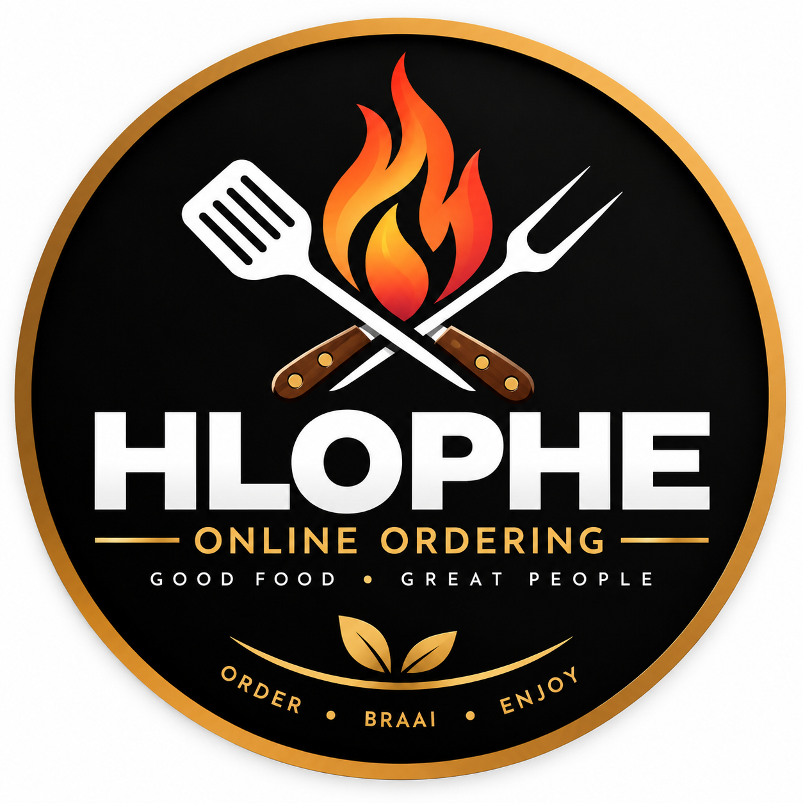

🚀 Open to Junior Full-Stack, Backend & Python/Django Developer Roles
Python/Django
Full-Stack Developer
Building AI-Powered Web Applications
I’m Miehleketo E. Chauke, a Junior Full-Stack Developer specialising in
Python, Django, JavaScript, and AI-powered web applications.
I build practical software solutions such as REST APIs, authentication
systems, database-driven applications, and AI integrations that solve
real-world problems.
From IT Support & Healthcare Operations to Software Development
Developer with a systems-thinking mindset
I am a Junior Full-Stack Developer who transitioned into software
development after building experience across IT support and
healthcare administration.
These roles strengthened my troubleshooting, communication,
problem-solving, and ability to understand how technology supports
real-world users and business processes.
I build full-stack applications using Python, Django, JavaScript,
and PostgreSQL, with a focus on backend engineering, REST APIs,
authentication systems, database design, and AI-powered solutions.
My background gives me a unique perspective when building software:
I combine technical skills with practical workflow understanding
to create applications that are reliable, user-focused, and
designed to solve real problems.

Project 01
Hlophe Online Ordering
A production Django ordering and operations system for
Hlophe Shisanyama that digitises customer ordering,
kitchen workflow, order tracking and business settlement
management.
Problem:
Traditional food ordering can rely heavily on verbal
orders and manual coordination between customers and
staff. This can make it difficult to manage incoming
orders, track preparation progress and maintain an
organised history of completed orders.
Solution:
I developed a Django-powered ordering and operations
platform for Hlophe Shisanyama. Customers can place
orders online while staff receive and manage those
orders through a dedicated operational dashboard.
The system also provides management with completed
order and platform settlement information.
Features
QR-based online customer ordering
Dynamic meat, sides and drinks menu
Amount-based meat ordering and fixed-price items
Automatic estimated order total calculation
Staff dashboard for incoming customer orders
Automatic staff dashboard refresh for new orders
Braai Master assignment
Order status workflow from received to collected
Final order total recording
Counter order support for walk-in customers
Completed and cancelled order history
EdVance owner settlement and platform fee dashboard
Technical Highlights:
Built with Python and Django using PostgreSQL for
production data storage, Django authentication and
groups for staff access, JavaScript for interactive
order calculations, responsive HTML/CSS interfaces,
WhiteNoise for static files and Railway for production
deployment.
Technical Challenges & Solutions
Challenge: Supporting Different Pricing Models
Meat orders needed customers to enter the amount
they wanted to spend, while drinks and sides used
fixed prices and quantities.
Solution:
I designed the menu system with separate pricing
types so the same ordering platform can handle
amount-based and fixed-price products.
Challenge: Managing the Order Workflow
Staff needed to know which orders were new,
being prepared, being braaied, ready for collection
or already completed.
Solution:
I implemented a structured order-status workflow
that allows staff to update each order as it moves
through the preparation process.
Challenge: Keeping New Orders Visible to Staff
New online orders needed to appear quickly without
requiring staff to constantly refresh the dashboard
manually.
Solution:
I added automatic dashboard refreshing so incoming
orders become visible to staff during operations.
Challenge: Separating Customer, Staff and Management Access
Customers need public access to ordering while
operational and financial information must remain
restricted.
Solution:
I created separate customer, staff and owner
workflows using Django authentication, permissions
and user groups.
Challenge: Tracking Platform Revenue
The platform needed a way to distinguish restaurant
order revenue from EdVance platform fees.
Solution:
I built an owner settlement dashboard that calculates
platform fees from completed orders and tracks paid
and outstanding settlements by month.
Challenge: Production Deployment & Static Files
Production deployment required PostgreSQL,
Gunicorn, static-file handling and environment
configuration to work correctly on Railway.
Solution:
I configured the Django production environment,
PostgreSQL database, Gunicorn, WhiteNoise and
Railway deployment workflow and tested the complete
ordering process in production.
A Django-powered auto-parts quotation platform that connects
customers with participating spare-parts shops, allowing
customers to request parts and compare quotes without
phoning or visiting multiple stores.
Problem:
Finding vehicle parts can require customers to call
or visit several spare-parts shops individually to
check availability and pricing. This takes time for
customers and creates repetitive enquiries for shops.
Solution:
I developed SpareQuote, a multi-shop quotation
platform where customers submit one vehicle-part
request and participating spare-parts shops can
respond with quotations through their own dashboards.
Customers can then track their request and compare
available quotes.
Features
Customer spare-part quotation requests
Vehicle make, model, year and engine details
VIN and licence-disc information support
Licence disc image upload
Multiple participating spare-parts shops
Individual secure shop accounts
Shop quotation dashboard
Quote submission and update workflow
Customer request tracking
Quote acceptance workflow
Request and quotation history
Shop password management
QR-based customer access for participating shops
Technical Highlights:
Built with Python and Django using PostgreSQL,
Django authentication, relational database models,
image uploads, responsive HTML/CSS interfaces and
production deployment on Railway.
Technical Challenges & Solutions
Challenge: Supporting Multiple Spare-Part Shops
The platform needed to allow several independent
shops to participate without exposing one shop's
account information or management controls to
another.
Solution:
I designed a Shop model connected to authenticated
Django users, allowing each participating business
to access its own account and quotation workflow.
Challenge: Matching Customer Requests With Shops
A single customer request needed to be available
to participating shops while keeping each shop's
quotation separate.
Solution:
I designed relational Django models that connect
part requests, shops and quotations while keeping
each submitted quote independently manageable.
Challenge: Managing Quote Acceptance
Once a customer accepted a quotation, the system
needed to clearly identify the successful quote
and prevent the request workflow from becoming
confusing.
Solution:
I implemented quote and request status workflows
so accepted quotations can be identified and
reflected across the relevant dashboards.
Challenge: Capturing Accurate Vehicle Information
Spare-part identification depends heavily on
correct vehicle details, and customers may not
always have all the information available.
Solution:
I designed the request form to capture vehicle
make, model, year, engine and VIN information,
with support for uploading a licence-disc image.
Challenge: Secure Shop Authentication
Participating businesses needed individual login
credentials and the ability to manage their own
passwords.
Solution:
I used Django's authentication system to create
individual shop users and added a dedicated
password-change workflow.
Challenge: Production File & Database Management
Deploying the application required handling
PostgreSQL data, customer uploads, static files
and production configuration.
Solution:
I configured the Django production environment,
PostgreSQL database, static/media handling,
Gunicorn and Railway deployment settings.
A production Django e-commerce catalogue developed for a real client,
featuring product management, PostgreSQL, WhatsApp enquiries,
SEO optimisation and Railway deployment.
Problem:
The client needed a professional online footwear catalogue
where customers could browse products, view shoe details
and easily enquire about purchases.
Solution:
I designed and developed AMLO Shoe Store using Django,
creating a responsive product catalogue with categories,
product galleries, pagination and WhatsApp enquiry
functionality.
Features
Category-based footwear catalogue
Product detail pages with multiple images
WhatsApp customer enquiry system
Responsive design for desktop and mobile
Product management through Django Admin
Pagination for larger product collections
SEO metadata, sitemap and robots.txt
Technical Highlights:
Built using Python and Django with PostgreSQL in production,
Django ORM for product management, Bootstrap and custom CSS
for the frontend, and deployed on Railway.
Technical Challenges & Solutions
Challenge: Managing Product Images
Products required multiple images while keeping the
catalogue easy for the client to maintain.
Solution:
I created Django product and product-image models,
allowing multiple images to be associated with each
product and managed through Django Admin.
Challenge: Creating a Simple Ordering Process
The client needed customers to enquire about products
without implementing a complex payment gateway.
Solution:
I created a WhatsApp enquiry workflow that allows
customers to select products and send their enquiry
directly to the business.
Challenge: Production Deployment
The website needed a production database, static files,
media handling and secure deployment configuration.
Solution:
I configured PostgreSQL, environment variables,
Gunicorn, WhiteNoise and Railway deployment settings
to run the application in production.
Challenge: Improving Search Visibility
The business needed its website to be discoverable
through search engines.
Solution:
I implemented page metadata, sitemap.xml, robots.txt
and configured the website for Google Search Console.
An intelligent learning assistant that helps students improve
study efficiency through AI-powered summaries, quizzes,
and personalized learning support.
Problem:
I wanted to build a tool that could help students study more
effectively by making it easier to understand learning material,
create practice questions, and receive quick feedback.
Solution:
AI Study Assistant is an AI-powered learning platform that helps
users summarise study content, generate quizzes, evaluate answers,
and organise their learning process using AI features.
Features
AI-generated summaries from study material
Quiz generation using Groq API
Automated answer evaluation and feedback
Tracking and managing learning activities
Technical Highlights:
Built with Django and PostgreSQL, integrating Groq AI for
generating learning content, Django ORM for data management,
authentication workflows, and deployed using Gunicorn on Render.
Technical Challenges & Solutions
Challenge: Connecting an AI Service to My Application
One of the biggest learning points was understanding how to
communicate with an external AI API and use the responses
inside my Django application.
Solution:
I integrated the Groq API, learned how to send structured
requests, handle responses, and display AI-generated content
correctly to users.
Challenge: Getting Consistent AI Responses
AI responses can sometimes vary, which made it difficult to
display information in a predictable way.
Solution:
I improved my prompts and structured the expected output
format so the application could process AI responses more
reliably.
Challenge: Managing AI-Generated Data
Storing study materials, generated quizzes, and user progress
required careful planning.
Solution:
I designed Django models and database relationships to store
and manage learning data in a structured way.
Challenge: Deploying an AI Application
Deploying an application with external APIs and database
requirements required additional configuration.
Solution:
I learned how to configure environment variables, connect
PostgreSQL, use Gunicorn, and deploy the application on
Render successfully.
An AI-powered facial analysis application that uses computer
vision for real-time face detection, emotion analysis,
and facial attribute estimation directly in the browser.
Problem:
I wanted to explore how AI could be used in a practical web
application. Many computer vision tools require users to install
extra software or use complex setups, so I wanted to create a
simpler browser-based experience.
Solution:
FaceSight AI is a browser-based facial analysis application that
uses the user's webcam to detect faces, analyse emotions, and
estimate facial attributes without requiring additional software
installation.
Features
Real-time face detection using a webcam
Emotion recognition and facial analysis
Age and gender estimation
AI processing directly in the browser using face-api.js
Technical Highlights:
Built with Django and JavaScript, integrating face-api.js for
browser-based AI processing, webcam access, machine learning
models, and deployed using Gunicorn on Railway.
Technical Challenges & Solutions
Challenge: Running AI Models in the Browser
One of the biggest challenges was understanding how to run
machine learning models efficiently without sending all the
processing to the backend.
Solution:
I researched browser-based AI tools and used face-api.js to
run the models directly in the user's browser, reducing
server workload and improving response time.
Challenge: Connecting the Webcam with the Application
Accessing the user's camera and processing live video was
challenging because browser permissions and video streams
needed to be handled correctly.
Solution:
I used JavaScript browser media APIs to request webcam access,
capture video input, and connect the stream with the AI
detection process.
Challenge: Loading AI Models Correctly
The application needed to make sure all required AI models
were loaded before starting face detection.
Solution:
I created a model loading process that checks when the AI
files are ready before allowing detection to begin.
Challenge: Improving Real-Time Performance
Running face detection continuously can affect browser
performance, especially on lower-powered devices.
Solution:
I adjusted the detection process and reduced unnecessary
processing to create a smoother user experience while
maintaining accurate results.
A gaming e-commerce platform that enables users to browse
products, manage a shopping cart, and complete purchases
through a structured checkout system.
Technical Challenges & Solutions
Challenge: Building a Shopping Cart System
Creating a shopping cart required users to add products,
update quantities, and keep their selections before checkout.
Solution:
I implemented Django sessions to store cart information,
allowing users to manage items without requiring an account.
This helped me understand session management and temporary
data storage in web applications.
Challenge: Designing the Database Structure
Connecting products, customers, orders, and order items
correctly was challenging because each part of the system
depended on accurate relationships.
Solution:
I designed Django models using relationships between tables
and used the Django ORM to manage product, order, and customer
data efficiently.
Challenge: Creating the Checkout Process
Converting cart items into completed orders required handling
customer information, product details, and order records
correctly.
Solution:
I created checkout logic that processes cart data and saves
completed orders into the database while maintaining accurate
records of purchases.
Challenge: Improving the User Experience
The goal was to create an e-commerce experience that was
simple, responsive, and easy for users to navigate.
Solution:
I used Bootstrap components, Django templates, and JavaScript
enhancements to improve the interface and create a smoother
shopping experience across different screen sizes.
A streaming content finder that helps users discover and manage
their favorite shows and movies across multiple platforms.
Technical Challenges & Solutions
Challenge: Integrating the TMDB API
The main challenge was understanding the external API structure,
managing API requests, and correctly displaying movie data returned
from the service.
Solution:
I implemented asynchronous JavaScript requests using fetch(),
processed JSON responses, and created dynamic rendering logic
to display movie titles, images, descriptions, and trailers.
Challenge: Handling Missing or Failed API Responses
External API data could sometimes be unavailable, incomplete,
or return unexpected results.
Solution:
I added error handling and validation checks to prevent application
failures and provide users with meaningful feedback when content
could not be loaded.
Challenge: Building a Dynamic User Interface
Updating search results and movie information without refreshing
the page required managing frontend interactions efficiently.
Solution:
I used JavaScript DOM manipulation to update content dynamically,
allowing users to search movies, view details, and browse categories
smoothly.
Challenge: Implementing the Favourite Movies Feature
The application needed a way to remember user-selected movies
without requiring a backend database.
Solution:
I implemented browser localStorage to save favourite movies and
restore user selections when returning to the application.
Git & GitHub version control, VS Code development workflow, and deployment using Railway for full-stack applications.
Git, GitHub, VS Code, Gunicorn, Railway, PostgreSQL, SQLite
Core Engineering Strengths
API design, authentication systems, database modeling, CRUD application development, problem-solving, and system thinking for real-world business applications.
Not sure which package is right for you?
Tell me about your project and I'll recommend an option
based on your requirements.
I'm currently open to Junior Full-Stack, Backend and Python/Django
developer opportunities. If you're hiring or would like to discuss
a development opportunity, feel free to get in touch.